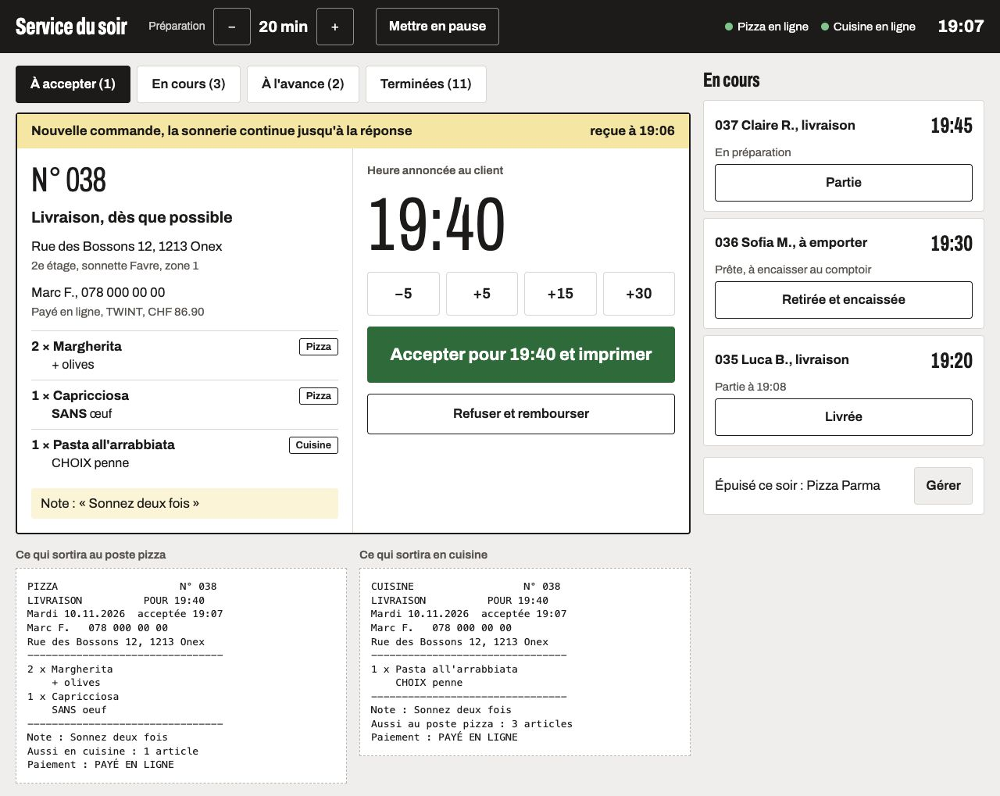

Commande La Ferme : direction Béton
Direction retenue par Jérémy le 5.11.2026. Le parcours : livraison ou retrait, adresse, carte, fiche du plat, panier, paiement, suivi, puis la tablette de cuisine.
A
Béton
Le gris du plan de travail des photos devient le fond de la carte. Les assiettes ont l'air posées sur une seule grande table. Titres étroits et gras, comme une enseigne.
Tablette de service
Une commande sonne jusqu'à la réponse. On ajuste l'heure, on accepte, et les deux tickets sortent : pizza d'un côté, cuisine de l'autre, chacun avec ses lignes.

À savoir en regardant
- Les prix affichés sont les prix de la salle proposés, tous à valider dans le tableau
docs/validation-carte.xlsx.
- Frais, minimum et heure viennent des propositions de zones (zone 1 : 2.90 de frais, 30.– de minimum). À valider aussi.
- L'horloge est figée à mardi 19h05 pour que les écrans restent comparables. Adresses, prénoms et numéros sont fictifs.
- Les textes sont provisoires. Ils seront réécrits avec la voix du restaurant une fois la direction choisie.
- Les provenances manquantes apparaissent en clair (« Jambon : provenance à compléter »). Les allergènes renvoient au 022 792 16 89 en attendant la liste du restaurant.
- 17 plats ont une photo du shooting. Ils passent en tête de chaque catégorie, les autres suivent en liste.